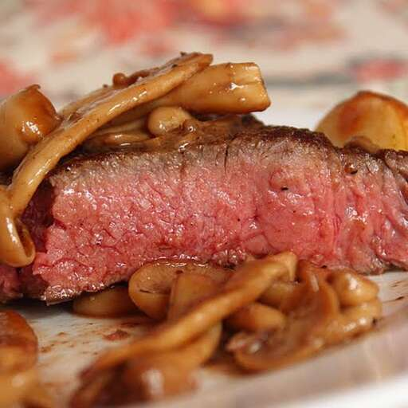

Sous Vide Strip Steak

Description
The real advantage to this sous vide steak technique is the fact that you're guaranteeing a perfect medium-rare. If you've never had any luck getting large, expensive hunks of steak cooked to your idea of perfection, then this is the way to go.
Ingredients
- 2 (12 ounce) New York strip steaks
- Salt and freshly ground black pepper to taste
- 2 teaspoons vegetable oil, divided
- 2 tablespoons cold butter, divided
- 1 cup clamshell mushrooms, bottoms trimmed and any bunches separated
- 1 clove garlic, crushed
- 2 tablespoons water
- ½ teaspoon balsamic vinegar
Steps
- Fill a large Dutch oven about 2/3 full with water. Bring water to 130 degrees F (54 degrees C) over medium heat. Attach a candy or oil thermometer to the side of the Dutch oven in order to monitor and maintain the water temperature.
- Generously season steaks with salt and pepper. Heat 1 teaspoon vegetable oil in a large skillet over high heat. Add steaks and cook until just browned, about 1 minute per side. Transfer steaks to a resealable plastic bag, squeeze out all air, and seal.
- Place the sealed plastic bag into the Dutch oven, adjusting the heat as necessary to maintain the water temperature at 130 degrees F (54 degrees C). Cook for 2 1/2 hours, moving the bag around occasionally and maintaining the water temperature.
- While the steaks are cooking, heat 1 tablespoon butter in the same skillet over medium-low heat. Add mushrooms and cook, stirring occasionally, until soft, about 5 minutes. Transfer to a plate and set aside.
- Remove steaks from the plastic bag (reserving any accumulated juices) and pat dry. Generously season again with salt and pepper. Heat remaining 1 teaspoon vegetable oil in the skillet over high heat. Place steaks in the skillet and cook to form a crust, about 2 minutes per side. Transfer steaks to a plate.
- Stir garlic and mushrooms into the skillet, reduce the heat to medium, and cook until mushrooms are reheated, about 2 minutes. Stir in reserved steak juices, 2 tablespoons water, and balsamic vinegar. Remove from the heat.
- Stir in remaining 1 tablespoon butter until completely melted and incorporated. Season with salt and pepper to taste. Spoon sauce over steaks and serve.